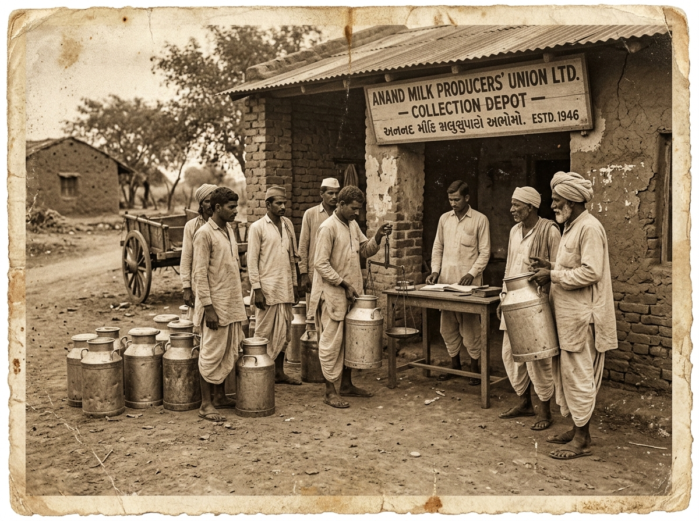
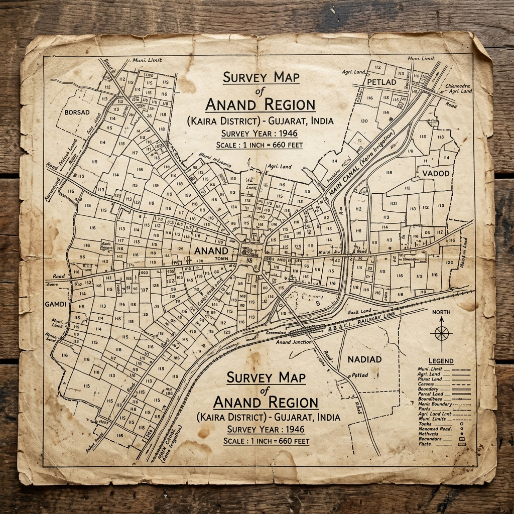

🏛️
UNSEAL ACCESSION DOSSIER
CONFIDENTIAL ACCESSION // 1946
NATIONAL ARCHIVES OF INDIA
Click wax seal to open case file spread
Open a cabinet drawer to begin your investigation

Anand Milk Depot (1946)
Kaira District Survey MapACCESS GRANTED // CASE FILE 001 // THE MILK MONOPOLY // 1946
“Milk is plentiful. Yet every family grows poorer.”
Tomorrow the village gathers. Tonight you must discover why.
Drag a clue onto another to connect what you've found.
Click wax seal to open case file spread